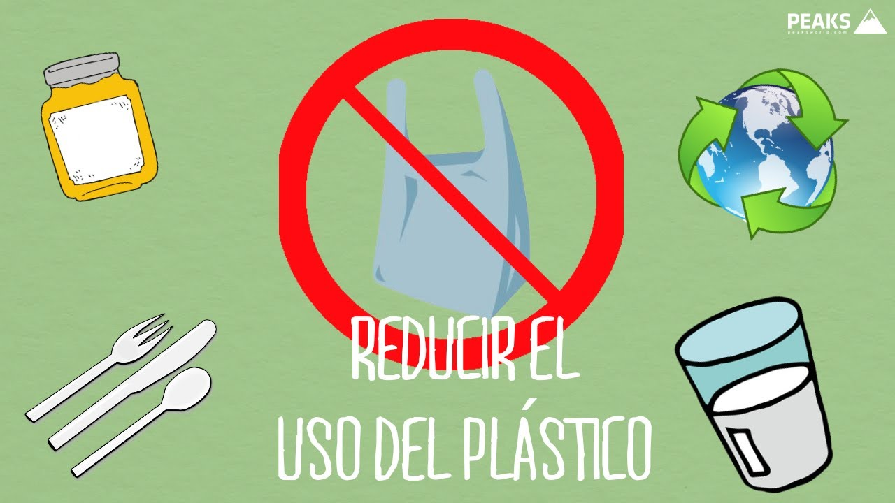

INTRODUCCION
El cuidado del planeta es una necesidad urgente y una responsabilidad compartida para garantizar la supervivencia y el bienestar de todos los seres vivos. Ante el deterioro ambiental, el cambio climático y el consumo excesivo de recursos, proteger la Tierra implica acciones cotidianas como reciclar, ahorrar energía y agua, y preservar la biodiversidad, asegurando un futuro sostenible para las próximas generaciones.
Un medio ambiente sano y sustentable es aquel en el que los recursos naturales se utilizan de manera responsable para satisfacer las necesidades presentes sin comprometer la capacidad de las generaciones futuras para satisfacer sus propias necesidades.
Para lograr un medio ambiente sano y sustentable, es necesario adoptar políticas y acciones que fomenten la conservación, la protección y la restauración de los ecosistemas, así como promover la educación ambiental y la participación ciudadana en la toma de decisiones relacionadas con el medio ambiente.
.jpg)
-
Responsabilidad Colectiva: No es solo tarea de expertos, sino de todos los ciudadanos realizar pequeñas acciones como usar menos plástico o cuidar el agua para generar un gran impacto.
-
Importancia Vital: El medio ambiente nos provee aire puro, agua, alimentos y refugio; deteriorarlo pone en riesgo directo nuestra propia salud y supervivencia.
-
Problemáticas Principales: El cambio climático, la contaminación del aire y agua, y la pérdida de biodiversidad (se estima que hasta un 50% de las especies podrían extinguirse para 2050) son las mayores amenazas.
-
Soluciones y Acción: Fomentar una cultura de sostenibilidad, cambiar los patrones de consumo para no agotar los recursos naturales antes de tiempo, y educar para el respeto ambiental.

.jpg)

La Tierra ES nuestro hogar. Formamos parte de un universo inmenso. En él, nuestro planeta está lleno de vida, con una rica variedad de plantas, animales y pueblos. Nosotros los humanos dependemos de la tierra, del agua y del aire y tenemos el deber ineludible de proteger la vida en la Tierra.
La situación del mundo. Desgraciadamente, nuestras actuales formas de producción y consumo destruyen a menudo el medio ambiente, agotan los
recursos naturales (agua, aire, suelo...) y hacen desaparecer muchas especies animales y vegetales. La población del mundo crece como nunca antes, pero al mismo tiempo la vida es destruida constantemente por guerras, hambre miseria, ignorancia, enfermedades, injusticias... Sin embargo, todas estas graves dificultades, si queremos, pueden ser superadas.
Todos somos responsables. Para cambiar nuestro mundo es necesario ser responsables de todo el planeta, especialmente del lugar concreto y pequeño donde vivimos, porque somos ciudadanos y ciudadanas de nuestro país y del mundo al mismo tiempo.
Consecuentemente, hay que saber para qué vivimos y qué es necesario hacer para vivir bien. Debemos transmitir nuestro ideal a las otras personas de nuestro alrededor.
.jpg)